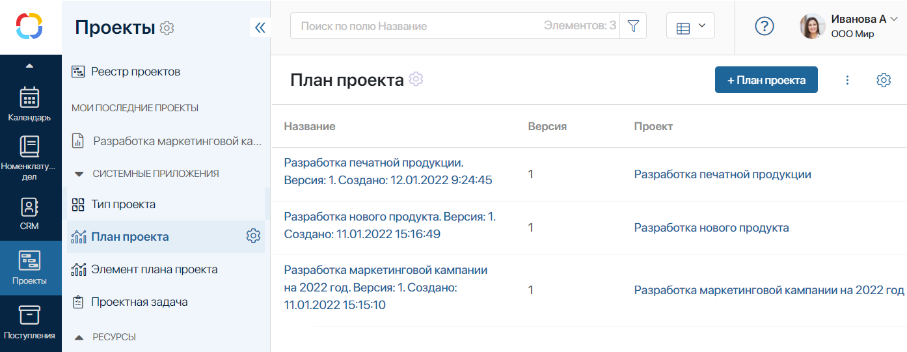
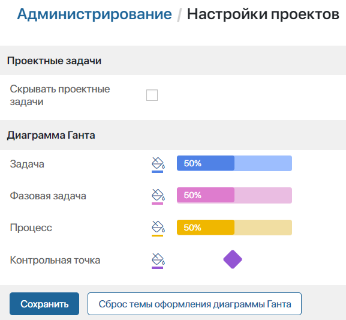

В разделе Проекты доступны стандартные настройки любого раздела:
- ограничить доступ к разделу для сотрудников;
- создать группы, дополнительные приложения и бизнес-процессы;
- экспортировать раздел в другую компанию.
Подробнее об этом читайте в статье «Раздел».
начало внимание
Изменять настройки раздела могут только пользователи, входящие в группу Администраторы.
конец внимание
Настроить системные приложения
В системных приложениях сохраняются все созданные проекты, планы проектов и задачи в виде отдельных элементов. По умолчанию эти приложения скрыты из левого меню раздела. Вы можете отобразить их:
- Проекты — здесь хранятся все проекты базового типа, созданные на странице Реестр проектов;
- План проекта — это приложение содержит все версии созданных планов проектов. К нему привязан системный процесс согласования плана проекта;
- Элемент плана проекта — здесь хранятся задачи всех типов, которые добавлены в планы проектов;
- Проектная задача — в этом приложении после публикации плана создаются и хранятся задачи с типами Задача и Контрольная точка.

Для каждого приложения доступны стандартные настройки. Вы можете изменять формы карточки проекта и проектной задачи, ограничивать доступ к данным, создавать бизнес-процессы, добавлять кнопки действий, настраивать статусы и т. д.
Настроить формы системных приложений
Для удобства работы с проектами вы можете настроить пользовательские формы системных приложений. Участники проекта видят эти формы, открывая карточку проекта или переходя в поставленную им задачу.
начало внимание
Опубликованные пользовательские формы приложений не обновляются автоматически при обновлении системы до новых версий. На такие формы новые поля и виджеты нужно добавлять вручную.
конец внимание
Чтобы создать пользовательскую форму, нажмите на значок шестерёнки рядом с названием нужного приложения и выберите пункт Настройка формы.
Добавить на форму поле
Вы можете создавать новые поля в приложениях и выносить их на формы создания, просмотра и редактирования. Например, если вы разрабатываете проект для другой компании, в приложении Проекты можно создать поле Клиент и вынести его на формы. Тогда это поле можно будет заполнить при создании проекта. Пользователи увидят его, открыв карточку проекта. Обратите внимание, добавленные по умолчанию поля каждого приложения являются системными, вы не можете их удалить.
Если вы хотите изменить карточку задачи с типом Задача или Контрольная точка, внесите изменения в два приложения: Элемент плана проекта и Проектная задача. В этих приложениях используются одинаковые шаблоны форм, т. к. элемент приложения Проектная задача создаётся автоматически на основе элемента приложения Элемент плана проекта. Обратите внимание, в контексте обоих приложений Имя свойства и Тип новых полей должны совпадать.
Добавить на форму виджет
Вы можете не только добавлять поля на форму, но и редактировать сам шаблон, например, добавлять виджеты или изменять их расположение. Допустим, вы создали бизнес-процесс для согласования плана проекта. Вы можете разместить на форме просмотра приложения Проекты виджет Кнопка и настроить его так, чтобы при нажатии на неё запускался экземпляр этого процесса. Пользователи увидят виджет, открыв карточку проекта. Также в карточке проекта вы можете настраивать и добавлять вкладки, используя виджет Вкладки.
Чтобы отредактировать шаблон формы, в окне Настройка формы перейдите на вкладку той формы, которую хотите настроить: создания, просмотра или редактирования. Нажмите <По умолчанию>, а затем кнопку + Создать форму. Откроется дизайнер интерфейсов.
По умолчанию на формах приложений используются виджеты раздела «Проекты». В дизайнере интерфейсов вы можете добавлять другие виджеты.
Настроить поля сортировки элементов в плане проекта
Вы можете задать параметры для сортировки задач в плане проекта. Для этого:
- Перейдите в приложение Элемент плана проекта и откройте настройки его формы.
- Выберите нужное свойство и включите опцию Поиск и сортировка.
Настроить страницу и разделитель
Для страницы Проекты доступны все стандартные настройки страниц. Вы можете отредактировать страницу, добавить на неё дополнительные виджеты и кнопки быстрых действий, ограничить видимость, изменить название и т. д. Чтобы открыть меню управления страницей, нажмите на значок шестерёнки рядом с её названием.
Обратите внимание, в разделе содержится скрытая по умолчанию страница Архив проектов, которую можно отобразить.
Чтобы открыть меню управления разделителем Мои последние проекты, нажмите на значок шестерёнки рядом с его названием. Затем выберите соответствующий пункт, чтобы изменить настройки разделителя, ограничить его видимость или удалить его.
Настроить статусы приложений
Контролировать этапы проекта, выполнение Проектных задач, а также отслеживать версии Плана проекта можно с помощью преднастроенных статусов.
Вы можете добавить свои статусы, разрешить или запретить пользователям изменять их вручную, включить опцию сохранения истории изменения статусов и т. д. Подробнее об этом читайте в статье «Поле „Статус“».
Информацию о статусах проекта смотрите в статье «Жизненный цикл проекта», о статусах плана — в статье «План проекта».
Настроить статусы проектных задач
Чтобы отслеживать этапы выполнения задачи с типом Задача или Контрольная точка в её карточке, включите опцию смены статусов в настройках приложения. Для этого:
- Нажмите на кнопку Настроить в левом меню раздела и сделайте видимым системное приложение Проектная задача.
- Справа от названия приложения нажмите на значок шестерёнки и выберите пункт Поле «Статус».
- В открывшемся окне отметьте флажком опцию Добавить поле «Статус». Появится список преднастроенных статусов для приложения, который можно изменить.
Настроить бизнес-процессы
На уровне любого системного приложения вы можете настроить собственный бизнес-процесс. Это позволит применить правила, принятые в вашей компании.
Например, для согласования плана проекта можно использовать готовый процесс или создать собственный на уровне приложения План проекта. Подробнее об этом читайте в статье «Настроить согласование плана».
Для настройки жизненного цикла проекта, а также архивации и дальнейшего возобновления работы с проектом используйте готовые процессы на уровне приложения Проекты. Если вы настраиваете пользовательские процессы смены статусов проекта, привяжите их к приложению Проекты.
Обратите внимание, завершённый проект не следует удалять, как элемент приложения Проекты. Это не позволит изменить статус плана проекта. Задачи также останутся активными, их статусы не изменятся. План проекта и его задачи являются элементами других приложений.
Настройки проектов
В разделе Администрирование > Настройки проектов вы можете:
- скрыть проектные задачи в разделе Задачи;
- изменить цвет задач в плане проекта.

В разделе Задачи по умолчанию отображается группа Проектные задачи. Вы можете скрыть её для всех пользователей, если большинство из них не работает с таким типом задач. Для этого включите опцию Скрывать проектные задачи. При этом любой сотрудник может включить отображение проектных задач в разделе Задачи, используя персональные настройки в профиле пользователя.
Также вы можете изменить цвет отрезка для каждого типа задач в плане проекта. Для этого справа от типа задачи нажмите значок , чтобы открыть палитру и выбрать цвет отрезка. После внесения изменений сохраните настройки.
Если вы хотите вернуть цветовую схему, установленную по умолчанию, нажмите кнопку Сброс темы оформления диаграммы Ганта и сохраните изменения.